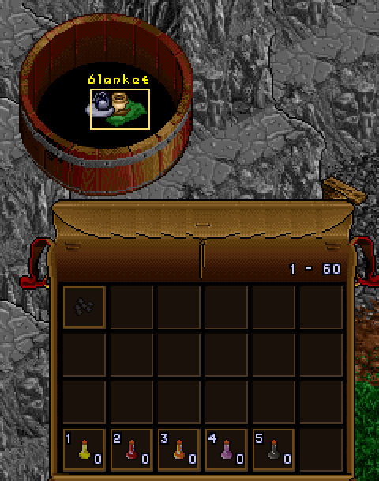
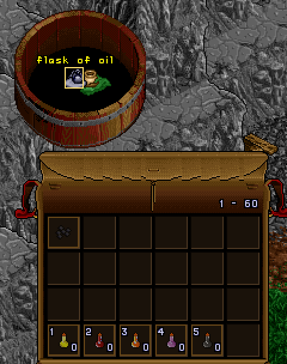
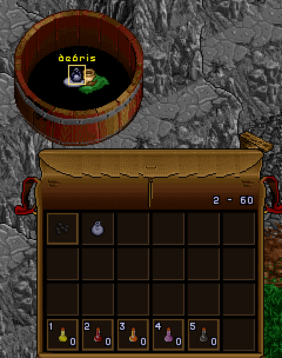

Mit dem Gamepad spielenPlaying with a gamepad
Eine Anleitung Schritt für Schritt: unterwegs, im Rucksack, in Fässern und Kisten, im Kampf.
A step-by-step guide: exploring, in the backpack, in barrels and chests, in a fight.
PaganRebuild lässt sich ganz ohne Maus und Tastatur spielen: mit einem Xbox-kompatiblen Controller oder auf dem Steam Deck (Standard-Gamepad-Layout in Steam).
Die Anleitung gilt für die moderne Steuerung mit der Option „Dinge durchschalten“; beides ist voreingestellt. Jeder Knopf lässt sich im Optionsmenü unter Steuerung neu belegen.
PaganRebuild can be played without mouse or keyboard: with an Xbox-compatible controller or on the Steam Deck (standard gamepad layout in Steam).
This guide is for the modern controls with the option "Cycle through things"; both are on by default. Every button can be reassigned in the options menu under Controls.
Das Gamepad auf einen BlickThe gamepad at a glance
- L-Stick
- Gehen · drücken (L3): Rennen an/aus
- R-Stick
- Zeiger · drücken (R3): Benutzbares hervorheben
- Dinge in Reichweite durchschalten
- A
- Benutzen
- B
- Springen · Fenster schließen
- X
- Schlagen · Ding verschieben
- Y
- Rucksack
- LT/RT
- Rechte / linke Maustaste
- LB/RB
- Waffe ziehen / blocken
- Start/Back
- Hauptmenü / Tagebuch
- L stick
- Walk · press (L3): run on/off
- R stick
- Pointer · press (R3): highlight usable things
- Cycle through things in reach
- A
- Use
- B
- Jump · close windows
- X
- Strike · move a thing
- Y
- Backpack
- LT/RT
- Right / left mouse button
- LB/RB
- Draw weapon / block
- Start/Back
- Main menu / journal
UnterwegsExploring
- Linker Stick
- Gehen. Stick drücken (L3) schaltet Rennen ein und aus.
- B
- Geradeaus springen; vor einer Kante: hochklettern.
- Rechter Stick
- Zeiger bewegen. Der Zeiger blendet sich aus, solange er nicht gebraucht wird; der Stick holt ihn zurück.
- Rechter Stick+LT
- Zum Zeiger springen: mit dem Stick auf freien Boden zielen, dann LT. So kommt man über Abgründe und auf schmale Stellen.
- RT
- Wie die linke Maustaste: zum Zeiger laufen, benutzen, angreifen.
- LT
- Wie die rechte Maustaste: Ding unter dem Zeiger in den Rucksack.
- R3
- Alles hervorheben, was man benutzen oder nehmen kann.
- Left stick
- Walk. Pressing the stick (L3) turns running on and off.
- B
- Jump straight ahead; at a ledge: climb up.
- Right stick
- Move the pointer. It hides while it is not needed; the stick brings it back.
- Right stick+LT
- Jump to the pointer: aim at open ground with the stick, then LT. This gets you over chasms and onto narrow spots.
- RT
- Like the left mouse button: walk to the pointer, use, attack.
- LT
- Like the right mouse button: the thing under the pointer into the backpack.
- R3
- Highlight everything that can be used or taken.
Dinge in Reichweite durchschaltenCycling through things in reach
Statt mit dem Zeiger zu zielen, wählt man mit dem Steuerkreuz eines der Dinge, die der Avatar von seinem Platz aus erreicht, und benutzt es mit A. Hier in der Taverne von Tenebrae:
Instead of aiming with the pointer, pick one of the things the Avatar can reach from where he stands with the D-pad, and use it with A. Here in the tavern of Tenebrae:


- Der erste Druck wählt das nächstgelegene Ding. Es leuchtet auf und sein Name steht in Gelb darüber.
- /Jeder weitere Druck geht reihum im Uhrzeigersinn um den Avatar, geht zurück. Angeboten wird, was man benutzen oder nehmen kann, also das, was R3 hervorhebt. Läuft der Avatar weg, verfällt die Wahl.
- A
Benutzt das gewählte Ding: eine Tür geht auf, ein Hebel wird umgelegt, ein Fass öffnet sich. Was man nur tragen kann, kommt in den Rucksack.
Kann man es benutzen und tragen, fragt ein kleines Menü: Benutzen / Nehmen, bei Waffen und Rüstung Anlegen / Nehmen. wählt, A bestätigt, B bricht ab. Das Spiel steht solange still.

„Breath o' Spirit“: Benutzen oder Nehmen?
- The first press picks the closest thing. It lights up and its name shows above it in yellow.
- /Each further press goes round the Avatar clockwise, goes back. You are offered what can be used or taken, the same things R3 highlights. When the Avatar walks away, the pick is dropped.
- A
Uses the thing picked: a door opens, a lever is pulled, a barrel opens. What can only be carried goes into the backpack.
If it can be used and carried, a small menu asks: Use / Take, for weapons and armour Wear / Take. chooses, A confirms, B cancels. The game stands still meanwhile.
"Breath o' Spirit": use or take?
Ohne Wahl benutzt A einfach das Nächstliegende vor dem Avatar. Fragt das Spiel nach einem Ziel (ein Schlüssel für eine Tür, Öl, ein Zauber), schaltet genauso durch, dann auch durch die Personen und Kreaturen im Bild; A nimmt das Gewählte als Ziel, B bricht ab.
With nothing picked, A simply uses the closest thing in front of the Avatar. When the game asks for a target (a key for a door, oil, a spell), cycles the same way, then also through the people and creatures in view; A takes the one picked as the target, B cancels.
Durch den Rucksack schaltenCycling through the backpack
Solange ein Fenster offen ist, gehört das Steuerkreuz den Fenstern: geht Ding für Ding, Reihe für Reihe.
While a window is open, the D-pad belongs to the windows: goes thing by thing, row by row.
- YdannY öffnet den Rucksack. / gehen Ding für Ding durch die Reihe. Ein goldener Rahmen zeigt, was gewählt ist, der Name steht oben links.

scroll of trap detection - /A
springt eine Reihe tiefer oder höher. Am Ende einer Reihe blättert auf die nächste Seite um, in derselben Reihe (hier Seite 2). Am Ende der letzten Seite geht es in der nächsten Reihe auf Seite 1 weiter; am Anfang einer Reihe führt ans Ende der Reihe darüber. Der Rahmen bleibt so immer im Rucksack.
A benutzt das Gewählte: Ein Trank wird getrunken, ein Beutel öffnet sich, eine Waffe fragt Anlegen / Werfen.

Seite 2: potion
- YthenY opens the backpack. / go thing by thing along the row. A gold frame shows what is picked, its name is at the top left.
scroll of trap detection - /A
goes a row down or up. At the end of a row, turns to the next page, in the same row (here page 2). At the end of the last page it goes on with the next row on page 1; at the start of a row leads to the end of the row above. So the frame always stays in the backpack.
A uses the thing picked: a potion is drunk, a bag opens, a weapon asks Wear / Throw.
Page 2: potion
Fässer, Kisten und andere BehälterBarrels, chests and other containers
Einen Behälter wählt man wie jedes Ding mit und öffnet ihn mit A. Mit Y kommt der Rucksack dazu, dann lässt sich zwischen beiden hin und her räumen.
Pick a container like any other thing with and open it with A. Open the backpack as well with Y, then you can move things back and forth between the two.
- /Geht Ding für Ding durch das Fenster, in dem man gerade ist, hier das Fass. Nach dem letzten Ding geht es wieder beim ersten los. Ins andere Fenster wechselt man mit LB / RB (siehe unten).

blanket - Ein Druck weiter: die Flasche Öl im Fass.

flask of oil - XVerschiebt das Gewählte zwischen Behälter und Rucksack, in beide Richtungen. Der Rahmen bleibt im Fenster und springt auf das nächste Ding, so kann man ein Ding nach dem anderen hinüberräumen. Nur wenn das Fenster leer wird, geht er mit. Dafür muss die Waffe weggesteckt sein (sonst schlägt X zu).

flask of oil → Rucksack, Rahmen: debris - LB/RBSpringt mit einem Druck ins Fenster links bzw. rechts, auf das Ding, das dort zuletzt gewählt war. Jedes Fenster merkt sich seine Auswahl.
- A/BA benutzt das Gewählte; was man nur nehmen kann, kommt in den Rucksack. B schließt alle Fenster, danach gehört das Steuerkreuz wieder der Welt.
- /Goes thing by thing through the window you are in, here the barrel. After the last thing it starts again at the first. LB / RB switch to the other window (see below).
blanket - One press further: the flask of oil in the barrel.
flask of oil - XMoves the thing picked between the container and the backpack, either way. The frame stays in the window and moves on to the next thing, so you can move one thing after another. Only when the window is left empty does it go along. The weapon has to be put away for this (otherwise X strikes).
flask of oil → backpack, frame: debris - LB/RBJumps with one press into the window on the left or right, onto the thing last picked there. Each window remembers its choice.
- A/BA uses the thing picked; what can only be taken goes into the backpack. B closes all windows, and the D-pad belongs to the world again.
Kampf, Menüs und GesprächeFights, menus and conversations
Kampf
- LB
- Waffe ziehen / wegstecken
- X
- Den nächsten Gegner schlagen; gehalten: weiter schlagen
- Treten
- RB halten
- Blocken
Menüs und Gespräche
- Start
- Hauptmenü
- Back
- Tagebuch
- Back+
- Zoom
- Back+Y
- Schnell speichern
- Back+X
- Werte des Avatars: Ausrüstung, Stärke, Leben, Mana
- /L-Stick
- In Menüs, Büchern und Gesprächen wählen
- A/B
- Bestätigen / zurück; in Szenen: weiter mit A
- LB/RB
- Seiten blättern
Fight
- LB
- Draw / put away the weapon
- X
- Strike the nearest enemy; held: keep striking
- Kick
- RB held
- Block
Menus and conversations
- Start
- Main menu
- Back
- Journal
- Back+
- Zoom
- Back+Y
- Quick save
- Back+X
- The Avatar's values: equipment, strength, health, mana
- /L stick
- Choose in menus, books and conversations
- A/B
- Confirm / back; in scenes: go on with A
- LB/RB
- Turn pages